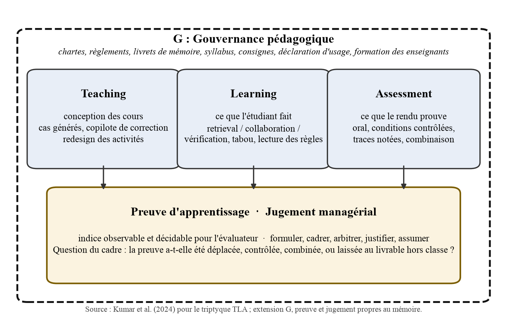
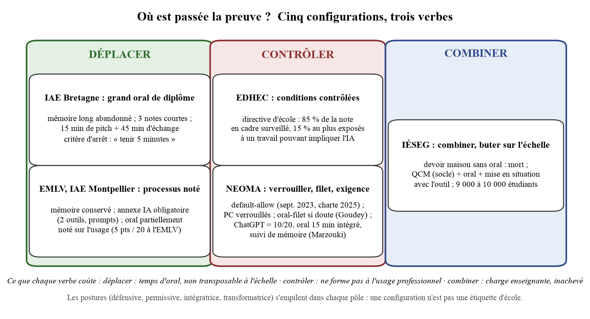

Les deux figures du corps du texte, en haute définition.

Figure 1. Le cadre TLA-G : le triptyque de Kumar et al. (2024), encadré par la gouvernance et orienté vers la preuve d'apprentissage et le jugement managérial. Source : nous-même, d'après Kumar et al. (2024).

Figure 2. Cinq configurations de preuve, trois verbes : déplacer, contrôler, combiner. Source : nous-même.